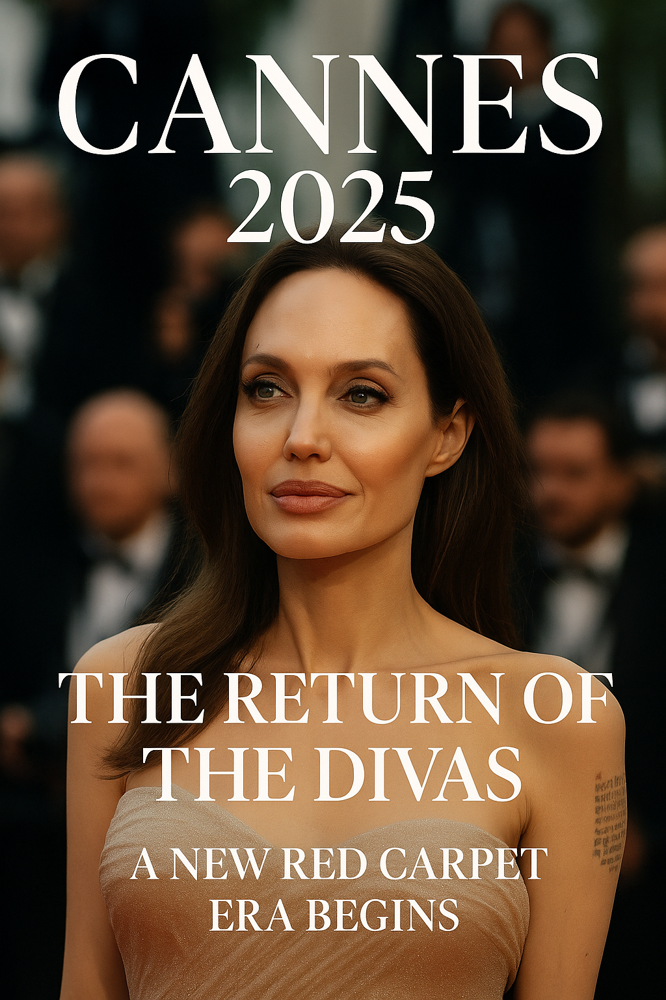

Cannes 2025: The Return of the Divas and a New Era of Glamour
Summary: Angelina Jolie and Jennifer Lawrence return to Cannes 2025 in stunning fashion, redefining what elegance looks like on the red carpet in a new era of conscious glamour.
Angelina Jolie Returns to the Riviera
After 14 years away from the Cannes spotlight, Angelina Jolie made a sensational return wearing a champagne-hued cashmere gown. The look was classic, quiet, and commanding—an editorial nod to the golden age of Hollywood with a modern, minimalist twist.
“Cannes 2025 is not just about cinema. It’s about reshaping what red carpet fashion means in the era of authenticity.”
Jennifer Lawrence and the Art of Subtle Power
Making her first red carpet appearance since welcoming her second child, Jennifer Lawrence appeared in a white strapless gown that radiated calm confidence. She was there for the premiere of her new film, "Die, My Love", and embodied effortless refinement.
Red Carpet, Redefined
This year, Cannes introduced new dress code rules banning “naked dresses.” The response was a wave of architectural silhouettes, heavier fabrics, and elegant restraint. The result? A runway of timelessness that felt refreshing—and overdue.
Editorial Elegance Takes Center Stage
The fashion at Cannes 2025 isn't about shock—it’s about shape, texture, presence. Think sculptural couture. Think narrative fashion. Think glamour as art direction. This is a new chapter for the red carpet, and it’s written in elegance.
“This red carpet is no longer a spectacle—it’s a story told in silk, silhouette, and strength.”
Published: 2025-05-18